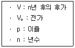
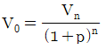
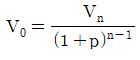
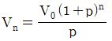
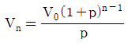

산림산업기사 (2017-08-26 기출문제)
1과목: 조림학
1. 소나무림을 갱신하는데 가장 적합한 작업종은?
- 택벌작업
- 산벌작업
- 모수작업
- 왜림작업
(정답률: 77%)

2. 산림군집을 수직적으로 볼 때 산림 식생의 층상구조가 잘 나타나는 산림은?
- 인공림
- 동령림
- 천연림
- 경제림
(정답률: 80%)
3. 다음 중 성격이 다른 숲은?
- 천연림
- 맹아림
- 원시림
- 불완전 천연림
(정답률: 82%)
4. 수목의 어린뿌리가 토양 중에 있는 곰팡이와 공생을 하는 균근의 역할이 아닌 것은?
- 수목에게 탄수화물을 공급한다.
- 토양 중에 있는 양료의 흡수를 돕는다.
- 토양의 건조에 대한 저항성을 높여 준다.
- 생육환경이 나쁜 곳에서는 생장에 중요한 역할을 한다.
(정답률: 76%)
5. 묘목의 가식에 대한 설명으로 옳은 것은?
- 가식 장소는 배수가 양호한 사질양토가 좋다.
- 묘포에서 캐낸 묘목의 뿌리를 충분히 말린 후 묻는다.
- 2~3일 정도 단기간 가식할 경우 묘목 다발을 풀어서 묻는다.
- 봄에는 노출된 줄기의 끝이 남쪽으로 향하도록 비스듬히 눕혀서 묻는다.
(정답률: 74%)
6. 우량한 묘목의 조건으로 옳지 않은 것은?
- 측아가 정아보다 우세한 것
- 발육이 완전하고 조직이 충실한 것
- 주지의 세력이 강하고 곧게 자란 것
- 양호한 발달 상태와 왕성한 수세를 지닌 것
(정답률: 92%)
7. 수형급 구분에 의하지 않고 임목간 거리를 대상으로 하는 간벌방법은?
- 도태간벌
- 하층간벌
- 자유간벌
- 기계적 간벌
(정답률: 82%)
8. 양수 수종에 해당하는 것은?
- Larix kaempferi
- Abies holophylla
- Taxus cuspidata
- Euonymus japonicus
(정답률: 67%)
9. 내음성에 대한 설명으로 옳은 것은?
- 양수는 음수보다 광포화점이 낮다.
- 과수류는 대부분 음수에 해당한다.
- 수목이 햇빛을 좋아하는 정도에 따라 구분한다.
- 수목이 그늘에서 견딜 수 있는 정도에 따라 구분한다.
(정답률: 89%)
10. 설형(쐐기형) 산벌작업에 대한 설명으로 옳지 않은 것은?
- 풍해에 대비하기 위한 방법이다.
- 벌기가 짧은 소경재 생산에 용이하다.
- 음수와 양수를 혼합하여 조성할 수 있다.
- 모수의 보호효과가 크고 갱신과정이 안정적이다.
(정답률: 55%)
11. 주로 5월 전후에 채종하는 수종은?
- 주목
- 미루나무
- 단풍나무
- 측백나무
(정답률: 69%)
12. 꽃이 완전화에 속하는 수종은?
- 자작나무
- 자귀나무
- 버드나무
- 가래나무
(정답률: 72%)
13. 산림용 묘목규격을 결정하는데 사용되지 않는 것은?
- 간장
- 묘령
- 근원경
- 흉고직경
(정답률: 57%)
14. 고립목에서의 양엽과 음엽의 특징 중 양엽에 대한 설명으로 옳은 것은?
- 잎이 넓다.
- 광포화점이 낮다.
- 잎의 두께가 두껍다.
- 엽록소 함량이 더 많다.
(정답률: 73%)
15. 종자의 보관 방법으로 보습저장법이 아닌 것은?
- 냉습적법
- 보호저장법
- 상온저장법
- 노천매장법
(정답률: 72%)
16. 택벌작업에 대한 설명으로 옳지 않은 것은?
- 양수 수종의 갱신에 적합하다.
- 작업한 임분의 심미적 가치가 높다.
- 병해충에 대한 저항력을 높일 수 있다.
- 보속 생산을 하는데 가장 적절한 방법이다.
(정답률: 75%)
17. 경제적 수입을 기대하면서 실시하는 작업종은?
- 제벌
- 간벌
- 밑깎기
- 덩굴치기
(정답률: 80%)
18. 종자가 성숙한 후 가장 오랫동안 모수에 붙어 있는 수종은?
- 단풍나무
- 느티나무
- 양버즘나무
- 방크스소나무
(정답률: 78%)
19. 종자의 개화 결실을 촉진시키기 위한 방법으로 옳지 않은 것은?
- 줄기에 철선묶기 등의 자극을 준다.
- 간벌을 실시하여 생육공간을 확장한다.
- 수피의 일부를 제거하여 C/N율을 높인다.
- 단근을 실시하여 질소의 흡수를 증가시킨다.
(정답률: 61%)
20. 소나무와 일본잎갈나무의 첫 번째 제벌을 시작하는 임령으로 옳은 것은?
- 1 ~ 2년
- 4 ~ 5년
- 7 ~ 8년
- 10 ~ 15년
(정답률: 72%)
2과목: 산림보호학
21. 솔잎혹파리에 대한 설명으로 옳지 않은 것은?
- 벌레혹을 만든다.
- 1년에 2회 발생한다.
- 5 ~ 7월경에 우화한다.
- 유충은 땅 속에서 월동한다.
(정답률: 75%)
22. 해안 방풍림 조성에 가장 적당한 수종은?
- 곰솔
- 포플러류
- 사시나무
- 일본잎갈나무
(정답률: 83%)
23. 공동충전제로 사용되는 발포성 수지 중 폴리우레탄 폼의 배합 비율로 가장 적합한 것은?
- 주제{(P.P.G) : 발포경화제(M.D.I) = 2 : 1
- 주제{(P.P.G) : 발포경화제(M.D.I) = 1 : 3
- 주제{(P.P.G) : 발포경화제(M.D.I) = 1 : 2
- 주제{(P.P.G) : 발포경화제(M.D.I) = 1 : 1
(정답률: 63%)
24. 종실을 가해하는 해충으로만 올바르게 나열한 것은?
- 밤나무혹벌, 굼벵이류
- 가루나무좀, 버들바구미
- 밤바구미, 복숭아명나방
- 미끈이하늘소, 미국흰불나방
(정답률: 81%)
25. 윤작의 연한이 짧아도 방제 효과가 가장 큰 수목병은?
- 흰비단병
- 자주빛날개무늬병
- 침엽수의 모잘록병
- 오리나무 갈색무늬병
(정답률: 58%)
26. 밤나무 줄기마름병에 대한 설명으로 옳지 않은 것은?
- 과다한 질소 시비를 지양한다.
- 천공성 해충의 피해를 받은 경우 잘 발생한다.
- 병원균의 중간기주인 포플러를 같이 심지 않는다.
- 동해나 열해를 받아 수피와 형성층이 손상 입은 경우 잘 발생한다.
(정답률: 64%)
27. 잎에 기생하며 흡즙 가해하는 것으로 노린재목에 속하는 해충은?
- 대벌레
- 솔노랑잎벌
- 배나무방패벌레
- 백송애기잎말이나방
(정답률: 66%)
28. 어스렝이나방이 월동하는 형태는?
- 알
- 유충
- 성충
- 번데기
(정답률: 58%)
29. 전염성 수목병에 있어서 주인에 해당하는 것은?
- 수종
- 병원체
- 재배법
- 토양조건
(정답률: 83%)
30. 어린 조림목에 가장 큰 피해를 주는 동물은?
- 어치
- 다람쥐
- 왜가리
- 멧토끼
(정답률: 74%)
31. 수세가 쇠약한 수목의 줄기를 가해하는 것은?
- 독나방
- 소나무좀
- 미국흰불나방
- 오리나무잎벌레
(정답률: 70%)
32. 솔나방에 대한 설명으로 옳지 않은 것은?
- 보통 5령충으로 월동한다.
- 성충은 4월 전후에 발생한다.
- 1년 1회, 일부 남부지방에서는 2회 발생한다.
- 부화 유충기인 8월에 비가 많이 오면 사망률이 높아진다.
(정답률: 51%)
33. 대추나무 빗자루병에 대한 설명으로 옳지 않은 것은?
- 바이러스에 의한 수목병이다.
- 매개충은 마름무늬매미충이다.
- 병든 나무의 분주를 통해 전염될 수 있다.
- 꽃봉오리가 잎으로 변하는 엽화현상이 발생한다.
(정답률: 66%)
34. 주로 가지나 줄기에서 발생하는 수목병은?
- 벚나무 빗자루병
- 느티나무 흰색무늬병
- 벚나무 갈색무늬구멍병
- 오동나무 자줏빛날개무늬병
(정답률: 61%)
35. 소나무류 잎녹병의 중간기주가 아닌 것은?
- 참취
- 쑥부쟁이
- 황벽나무
- 참나무류
(정답률: 55%)
36. 수목의 뿌리혹병을 방제하는 방법으로 가장 거리가 먼 것은?
- 건전한 묘목 식재
- 석회 사용량 증가
- 4~5년간 휴경 실시
- 병든 묘목 즉시 제거
(정답률: 75%)
37. 산불 피해에 대한 설명으로 옳지 않은 것은?
- 산불의 피해는 여름이 가장 크다.
- 은행나무가 소나무보다 산불의 피해가 작다.
- 활엽수보다 침엽수가 산불의 피해를 심하게 받는다.
- 수령이 낮은 임분일수록 산불의 피해를 많이 받는다.
(정답률: 82%)
38. 잣나무넓적잎벌에 대한 설명으로 옳지 않은 것은?
- 유충으로 월동한다.
- 우화 최성기는 7월경이다.
- 나뭇잎 뒷면에서 월동한다.
- 1년에 1회 또는 2년에 1회 발생한다.
(정답률: 50%)
39. 솔껍질깍지벌레가 수목에 피해를 입히는 형태는?
- 천공 가해
- 식엽 가해
- 충영 형성
- 흡즙 가해
(정답률: 68%)
40. 수목병의 방제를 위한 예방법과 가장 거리가 먼 것은?
- 숲가꾸기
- 임지 정리
- 환상박피 작업
- 건전한 묘목 육성
(정답률: 77%)
3과목: 임업경영학
41. 임업조수익을 계산하기 위해 사용되는 인자는?
- 감가상각액
- 현금지출액
- 임업외 현금수입액
- 미처분 임산물 증감액
(정답률: 67%)
42. 임지기망가에 대한 설명으로 옳은 것은?
- 관리비는 임지기망가가 최대로 되는 시기와 관계없다.
- 이율이 높을수록 임지기망가가 최대로 되는 시기가 늦게 온다.
- 간벌수익이 클수록 임지기망가가 최대로 되는 시기가 늦게온다.
- 임지기망가가 최대로 되는 때를 벌기로 한 것을 시장가격 최대의 벌기령이라 한다.
(정답률: 49%)
43. 삼림평가가 임지와 임목의 평가 이외에도 여러 분야에서 응용되고 있다. 다음 중 응용분야로 거리가 먼 것은?
- 산림의존도의 사정
- 산림과세의 기준 설정
- 산림피해의 손해액 결정
- 산림의 매매, 교환의 가격사정
(정답률: 55%)
44. 벌기령에 대한 설명으로 옳은 것은?
- 임목이 실제로 벌채되는 연령
- 모든 임분을 일순벌하는데 필요한 기간
- 맨 처음 택벌한 일정구역을 또 다시 택벌하는데 필요한 기간
- 임부이 생장하는 과정에 있어서 어느 성숙기에 도달하는 계획상의 연수
(정답률: 67%)
45. 임분의 재적을 측정하는 방법 중에서 표본점을 필요로 하지 않기 때문에 플롯레스 샘플링(plotless sampling) 이라고 하는 방법은?
- 표본조사법
- 원형 표준지법
- 대상 표준지법
- 각산정 표준지법
(정답률: 59%)
46. 말구직경 26cm, 중앙직경 30cm, 원구직경 36cm, 재장이 4m인 통나무를 Huber식에 의하여 계산한 재적은?
- 약 0.212m3
- 약 0.283m3
- 약 0.302m3
- 약 0.407m3
(정답률: 62%)
47. 산림경리의 업무내용 중 본업에 속하지 않는 것은?
- 수확규정
- 조림계획
- 시설계획
- 산림구획
(정답률: 51%)
48. 평가방법에 따른 대상으로 올바르게 짝지어진 것은?
- 기망가 - 성숙림
- 매매가 - 장령림
- 비용가 - 유령림
- 자본가 - 중령림
(정답률: 74%)
49. 임업의 경제적 특성으로 원목가격 구성요소에서 가장 큰 항목은?
- 지대
- 육림비
- 운반비
- 감가상각비
(정답률: 70%)
50. 다음 조건에서 단일 수입의 복리산식 중 전가계산식으로 옳은 것은?





(정답률: 61%)
51. 우리나라 산림의 소유별 구조에서 가장 많은 비율을 차지하고 있는 것은?
- 국유림
- 사유림
- 도유림
- 군유림
(정답률: 82%)
52. 임분밀도를 나타내는 척도 중 우세목의 수고에 대한 입목간 평균거리의 백분율을 의미하는 것은?
- 입목도
- 상대밀도
- 상대공간지수
- 임분밀도지수
(정답률: 41%)
53. 산림경영계획을 위한 지황조사 항목에 대한 설명으로 옳은 것은?
- 방위는 임지의 주 사면을 보고 4방위로 구분한다.
- 지리는 임지의 생산능력에 따라 m 단위로 표시한다.
- 토양의 건습도는 일반적으로 습, 중, 건 3단계로 분류한다.
- 경사도는 5단계로 구분하는데 가장 완만한 완경사지는 15°미만을 말한다.
(정답률: 63%)
54. 임분 재적이 ha당 180m3, 임분 형수가 0.4, 임분 평균수고가 15m인 경우 ha당 흉고단면적은?
- 4.8m3
- 12m3
- 30m3
- 72m3
(정답률: 62%)
55. 임업자산 중 고정자산이 아닌 것은?
- 임도
- 묘목
- 집재도구
- 벌목기계
(정답률: 78%)
56. 1000만m3의 산림에 대한 숲가꾸기 실시설계의 책임기술자를 배치하고자 할 때 필요한 인력에 해당하는 것은?
- 기능특급 산림경영기술자 1인
- 기술특급 산림경영기술자 1인
- 해당 업무분야 실무경력 4년 이상 기술 1급 산림경영기술자 1인
- 해당 업무분야 실무경력 6년 이상 기능 2급 산림경영기술자 1인
(정답률: 72%)
57. 취득원가에서 감가상각비 누계액을 뺀 후 장부원가에 일정율의 감가율을 곱하여 감가상각비를 산출하는 방법은?
- 정률법
- 연수합계법
- 생산량비례법
- 작업시간비례법
(정답률: 75%)
58. 어느 임분의 ha당 20년 전 재적이 200m3이고 현재 재적이 300m3일 때, 이 임분의 재적을 Pressler 공식으로 계산한 생장률은?
- 2%
- 3%
- 4%
- 5%
(정답률: 49%)
59. 법정림에서 법정상태 요건이 아닌 것은?
- 법정축적
- 법정수확
- 법정생장량
- 법정영급분배
(정답률: 71%)
60. 경영규모의 확장으로 인하여 물리적으로는 고정자산의 사용이 가능하지만 경제적 이유로 이를 사용할 수 없기 때문에 폐기시키는 경우에 해당하는 것은?
- 물리적 감가
- 부적응 감가
- 진부화 감가
- 부패‧부식 감가
(정답률: 61%)
4과목: 산림공학
61. 돌쌓기에서 모르타르나 콘크리트를 사용하는 것은?
- 메쌓기
- 찰쌓기
- 골쌓기
- 켜쌓기
(정답률: 69%)
62. 삭도 운재 방법에 대한 설명으로 옳지 않은 것은?
- 대량 운반이 용이하다.
- 임지 훼손을 최소화할 수 있다.
- 험준한 지형에서도 설치가 가능하다.
- 지정된 장소에서만 적재 및 하역이 가능하다.
(정답률: 63%)
63. 목재 충해와 균해를 방지(예방)하고, 장기간 보존하기 위하여 주로 사용되는 저목방법은?
- 수중저목
- 최종저목
- 중계저목
- 산지저목
(정답률: 71%)
64. 시멘트에 탄산나트륨이나 탄산칼슘을 넣으면 어떻게 되는가?
- 빨리굳는다.
- 동해에 강하다.
- 느리게 굳는다.
- 방수효과가 있다.
(정답률: 75%)
65. 앞면‧길이‧뒷면‧접촉부 및 허리치기의 치수를 특별히 맞도록 지정하여 제작한 석재는?
- 막깬돌
- 견치돌
- 야면석
- 호박돌
(정답률: 81%)
66. 기초공사에 대한 설명으로 옳지 않은 것은?
- 전면기초는 상부구조의 전면적을 받치는 단슬랩의 지지층에 실려있는 형태이다.
- 확대기초는 직접기초의 일종으로 상부구조의 하중을 확대하여 직접 지반에 전달한다.
- 직접기초는 견고한 지반 위에 기초콘크리트 직접 시공하고 하중이 작용하도록 한다.
- 공기 케이슨 기초는 큰 관과 같은 모양의 통내부를 수중굴착하여 침하시킨 다음 수중콘크리트를 쳐서 만든 기초이다.
(정답률: 68%)
67. 계류보전사업에서 고려되어야 할 사항이 아닌 것은?
- 계류의 분류점과 합류점은 예각이 되도록 한다.
- 상류부에는 산지사장의 계간사방공사와 연계한다.
- 계안이나 제방으로 보호할 곳은 기슭막이 시공을 해야한다.
- 하류부에는 골막이 또는 사방댐을 설치하여 산각을 고정한다.
(정답률: 56%)
68. 작업로망 배치형태의 이용성이 가장 높은 형태는?
- 방사형
- 단선형
- 간선수지형
- 방사복합형
(정답률: 58%)
69. 임도시공에서는 흙쌓기는 시공 후에 시일이 경과하면 수축하여 용적이 감소되어 공사면이 어느 정도 침하된다. 이를 보완하기 위해 시공하는 것은?
- 더쌓기
- 다지기
- 단끊기
- 물빼기
(정답률: 76%)
70. 와이어로프의 폐기기준으로 옳지 않은 것은?
- 꼬임상태인 것
- 현저하게 변형 또는 부식된 것
- 와이어로프 소선이 10분의 1이상 절단된 것
- 마모에 의한 직경 감소가 공칭 직경의 10%를 초과하는 것
(정답률: 59%)
71. 아스팔트 포장작업 마무리 및 성토전압에 주로 사용하는 것은?
- 탬핑 롤러
- 진동 롤러
- 타이어 롤러
- 진동 콤팩터
(정답률: 59%)
72. 임도의 종단기울기가 8%인 구간에 곡선부의 외쪽기울기를 6%로 설치할 때 합성기울기는?
- 2.0%
- 6.9%
- 10.0%
- 14.0%
(정답률: 60%)
73. 임도의 폭이 5m, 반출할 목재의 길이가 20m인 경우에 임도의 최소곡선반지름은?
- 10m
- 15m
- 20m
- 25m
(정답률: 68%)
74. 비탈면의 녹화를 위한 사방공사에 속하지 않는 것은?
- 조공
- 비탈덮기
- 바자얽기
- 비탈다듬기
(정답률: 53%)
75. 설계속도가 30km/h인 일반지형 임도의 경우에 종단기울기 설치 기준은?
- 7% 이하
- 8% 이하
- 10% 이하
- 12% 이하
(정답률: 64%)
76. 방호책이나 가드레일 등을 노측에 설치하는 방법에 대한 설명으로 옳지 않은 것은?
- 임도의 축조한계 밖에 시설해야 한다.
- 표지와 같은 부속물은 절취 또는 성토 비탈면에 설치한다.
- 옹벽 등에 설치하는 경우에는 기둥부분까지 마루나비를 넓힌다.
- 축조한계와 접하여 설치하는 경우에는 기둥을 얕게 묻어 차량통행에 방해되지 않도록 한다.
(정답률: 57%)
77. 비탈면에 자주 일어나는 침식형태로 산사태, 붕락, 포락 등에 해당하는 것은?
- 붕괴형 침식
- 지중형 침식
- 유동형 침식
- 땅밀림 침식
(정답률: 75%)
78. 녹화용 피복자재가 아닌 것은?
- 식생반
- 그라우트
- 볏짚거적
- 쥬트네트
(정답률: 60%)
79. 산림토양 10,000m3을 4m3용량의 덤프트럭으로 운반한다면 필요한 덤프트럭의 수는? (단, L = 1.25)
- 2,000대
- 2,500대
- 3,125대
- 3,425대
(정답률: 55%)
80. 사방댐 설계시 고려하여야 할 사항으로 옳은 것은?
- 댐의 하단부에 암석층이 없어야 한다.
- 구역이 긴 구간은 계단상 댐을 설치한다.
- 평형기울기와 홍수기울기가 같아야 한다.
- 댐 어깨가 접하는 곳에는 점토가 있어야 한다.
(정답률: 65%)